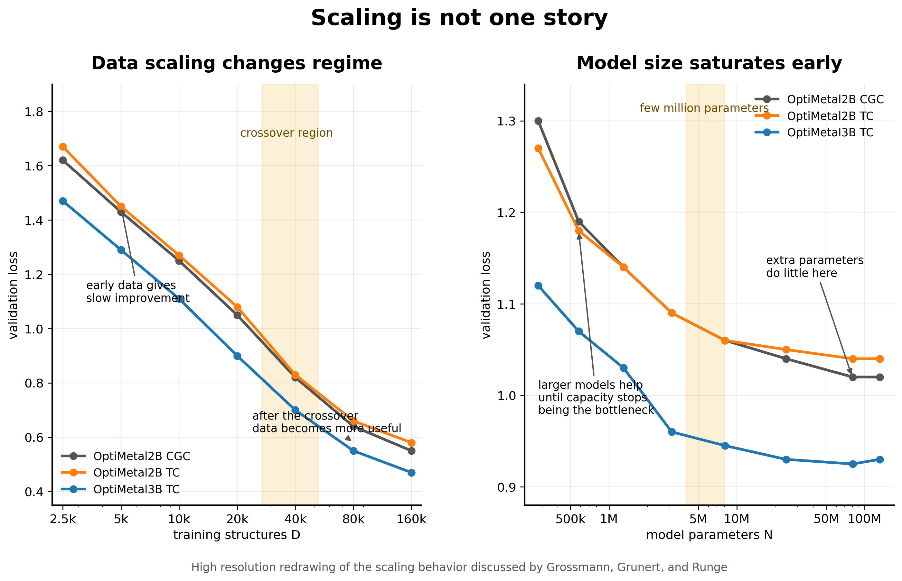
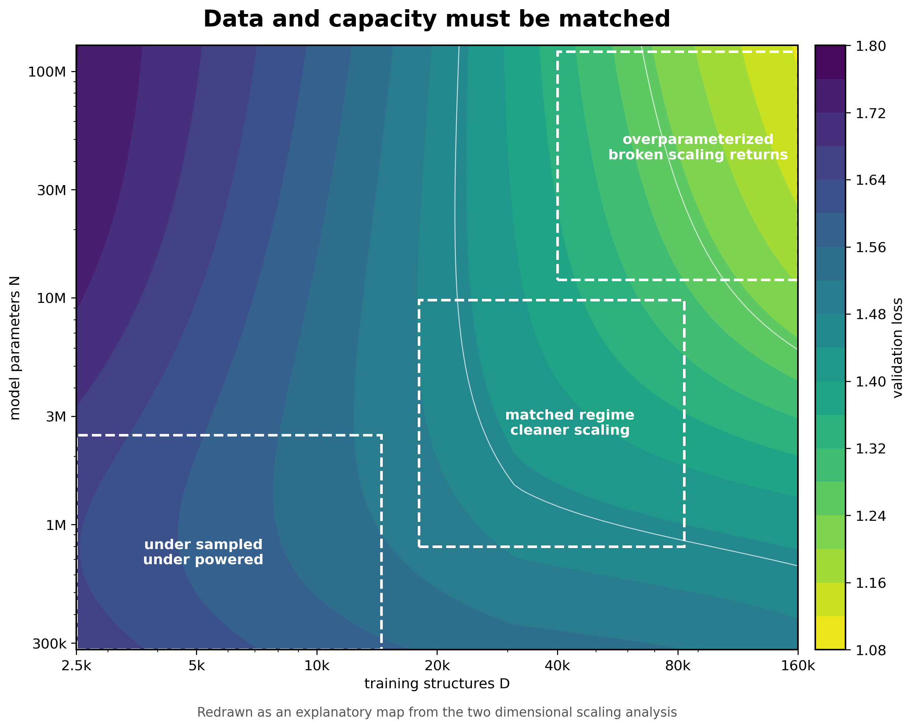
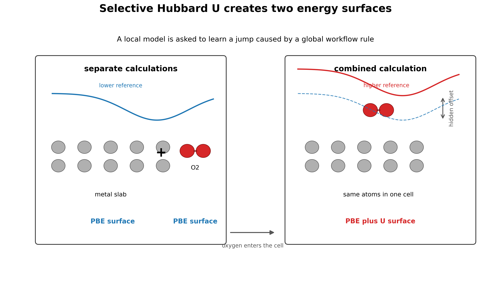
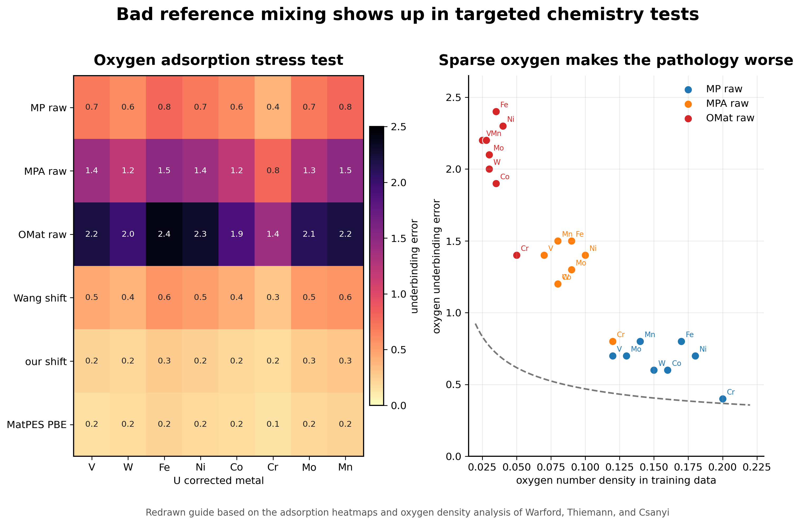
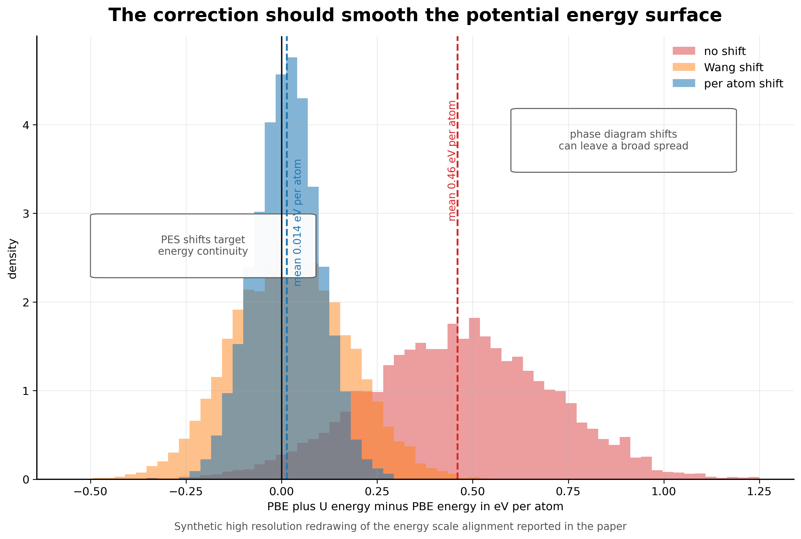

Foundation machine learning interatomic potentials are often discussed as models. That is true, but it is not the whole story. A potential is not defined by the architecture alone. It is defined by the reference calculations, the structures chosen for those calculations, and the parts of configuration space that the dataset makes visible.
This is why data papers matter for MLIPs. A model can only learn the surface it is shown. If the data are sparse, inconsistent, or sampled from the wrong places, scale becomes a way to hide the problem. The model can become larger and the dataset can become larger while the learned chemistry becomes less trustworthy.
The first paper I want to revisit is by Grossmann, Grunert, and Runge. It is not an MLIP paper, but it gives a useful lens for thinking about materials learning at scale. They study neural scaling laws for a high dimensional optical response task and show that data scaling can break into regimes rather than follow one smooth power law [1]. The second paper is by Warford, Thiemann, and Csányi. It shows that selective Hubbard U settings in common reference datasets can create two incompatible energy surfaces and that foundation MLIPs trained on the mixture learn that inconsistency [2].
Taken together, the two papers make a stronger point than either paper makes alone. Data is not background information for a foundation MLIP. Data is the physical definition of the object being learned.
Scaling is a diagnostic, not a slogan
Scaling laws are tempting because they make progress look measurable. If loss falls as dataset size increases, then the obvious move is to add more data. If loss falls as parameter count increases, then the obvious move is to build a larger model. That logic is useful only if the curve is telling the truth about the task.
Grossmann and coauthors make this concrete with a dataset of 201,361 converged dielectric function calculations generated from more than 200,000 intermetallic compounds. The models predict the frequency dependent complex interband dielectric function and the Drude frequency. The authors compare two invariant graph neural networks, OptiMetal2B and OptiMetal3B, where the second model adds explicit three body interactions [1].
The result is not the usual simple story. When model size is held around ten million parameters, the data scaling is best fit by a smoothly broken power law. In the low data regime, the scaling exponent is only about 0.15 to 0.18. Above a crossover scale around 10^4.43 to 10^4.72 training structures, the exponent steepens to about 0.38 to 0.42. More data helps in both regimes, but it helps differently [1].

I like this result because it says that the value of another calculation depends on where the model already is. In the small data regime, the model can learn broad structure property trends but may not be constrained enough to learn finer features. After the crossover, the training set may finally contain enough diversity for more detailed correlations to become learnable. The same structure can look like a slow scaling problem before the threshold and a better scaling problem after it.
Parameter scaling behaves differently. The paper finds that validation loss improves with model size up to a few million parameters and then saturates quickly. This is a useful warning for MLIPs. If the training set does not contain the environments that matter, a larger model may only become a better interpolator inside the same incomplete space.
Data and capacity have to meet each other
The two dimensional scaling analysis is the part that makes the paper feel most relevant to foundation potentials. The authors vary dataset size and parameter count together rather than sweeping one at a time. This matters because a one dimensional scaling curve can be misleading when the model is strongly overparameterized or underpowered [1].
In the low parameter regime, adding data eventually saturates because the model cannot use all of it. In an intermediate regime around N = 1 million, data and capacity are better matched and scaling can look closer to a simple power law. With larger overparameterized models, broken data scaling returns. The authors also find that increasing body order improves data scaling in the two dimensional view, even though it does not improve parameter scaling in the same way [1].

For MLIPs, I would translate this into a coverage problem. The number of structures is not the same thing as the number of useful local environments. A dataset can grow while still missing strained transition states, unusual coordinations, reactive surfaces, charged defects, high pressure motifs, or hydrogen networks. The effective dataset size for the difficult part of the application can remain small even when the full dataset looks enormous.
This is the scaling lesson I would keep. Do not ask only how loss changes with D. Ask what kind of environments enter when D increases. If the new data mostly repeats easy minima, the curve may flatten. If the new data finally reaches the missing chemistry, the curve can change character.
The reference surface can break chemistry
The scaling paper makes the natural response feel obvious. Build bigger and better datasets. Warford, Thiemann, and Csányi show why that response is incomplete. More data is only helpful if the labels define a coherent surface.
The issue comes from the Materials Project style selective Hubbard U workflow. For selected transition metals, V, W, Fe, Ni, Co, Cr, Mo, and Mn, a U correction is applied only when oxygen or fluorine is present in the simulation cell. A pure transition metal slab can therefore be computed on a PBE surface, while the same slab with an oxygen molecule far away in the cell can flip onto a PBE plus U surface [2].
This can be reasonable for phase diagram construction, where the goal is to improve thermochemical stability. It is much worse for MLIP training, where the goal is a smooth potential energy surface. A local potential with a finite cutoff cannot naturally represent a global rule that changes the reference energy because one atom of oxygen exists somewhere in the same cell.

The failure mode is chemically direct. When oxygen or fluorine approaches a U corrected metal, the model has learned that the energy should become too positive. That produces systematic underbinding. In some cases, it produces outright repulsion where binding should occur [2].
A local model learns a global discontinuity
The paper tests the pathology in the most direct way possible. The authors place oxygen on 54 elemental slabs and compare PBE adsorption energies to predictions from several foundation MLIPs. The models trained on raw mixed PBE and PBE plus U data underbind oxygen on the U corrected metals. The OMat and Alexandria trained models show especially severe behavior, with some predictions becoming repulsive even at large oxygen distances [2].
The important part is that this is not just a model architecture problem. Warford and coauthors connect the severity of the failure to oxygen number density in the training configurations. When oxygen is sparse in cells that contain a U corrected metal, the nearest oxygen atoms are more likely to sit near the edge of the model receptive field. The model then learns a sharp energy rise when oxygen enters the cutoff, which appears as unphysical repulsion in adsorption tests [2].

The interface tests make the same point in a form that matters for materials chemistry. For Fe and Ni metal oxide interfaces, some affected models predict unstable interfaces and the slabs move apart during relaxation. That is not a small benchmark error. It is a failure mode that would poison studies of oxidation, corrosion, and catalysis [2].
This is the clearest example of why a foundation MLIP dataset cannot be treated as a neutral bag of structures. The same local environment can be assigned labels from different effective energy surfaces depending on workflow metadata. If that metadata is not represented or corrected, the model is asked to learn a contradiction.
The fix should target the surface
The cleanest solution is to avoid selective U in foundation MLIP datasets. MatPES and MP-ALOE take that route and therefore avoid this specific pathology [2]. That does not solve correlated electron physics. It does solve the simpler problem of asking a local model to fit one smooth reference surface.
For existing datasets, Warford and coauthors propose a low cost correction. They fit a constant per U corrected atom energy shift for each affected metal. The fit uses 25,094 structures that appear both in MatPES PBE and in Materials Project PBE plus U calculations. Before correction, the mean difference between PBE plus U and PBE energies is 0.46 eV per atom, or about 2.5 eV per U corrected atom. After applying their shift, the mean difference drops to 0.014 eV per atom [2].

I like this fix because it is not trying to solve the wrong problem. The goal is not to make PBE plus U perfect. The goal is to remove an avoidable discontinuity from the training target. That is a much more practical objective for a foundation potential. A smoother surface is more useful for forces, relaxations, molecular dynamics, and adsorption than a correction designed only around phase diagram accuracy.
What the two papers say together
The scaling paper says that materials learning can have regimes. The Hubbard U paper says that the dataset can contain hidden contradictions. Those are not separate lessons. Scaling curves only mean what we think they mean if the reference surface is coherent.
A broken scaling law could reflect a real transition in learnability. It could also reflect dataset heterogeneity, reference mixing, or a hidden workflow boundary. A large dataset can move a model into a better scaling regime. It can also add more low density oxygen environments and make a selective U pathology worse. The number of calculations alone does not decide which outcome occurs.
This is why I would be careful with the language of foundation MLIPs. A model trained on many chemistries is not automatically universal. It is universal only over the reference surface and configuration space that the data actually define. If the surface changes definition across chemistry, the model is learning a patchwork.
Four rules I would take forward
The first rule is to count coverage, not just structures. For MLIPs, coverage means local environments, distortions, interfaces, pressure regimes, defect motifs, and reactive pathways. A dataset can be large and still small in the region where a target application lives.
The second rule is to treat provenance as part of the label. Exchange correlation functional, U usage, pseudopotentials, smearing, magnetism, dispersion settings, convergence, and workflow choices are not side information. They define the potential energy surface.
The third rule is to use stress tests that target known discontinuities. Oxygen adsorption on U corrected metals is a good example. A small focused benchmark can reveal a data pathology faster than a broad random test set.
The fourth rule is to fix data before adding model capacity. A per atom energy shift is not glamorous, but it can remove a contradiction that no model architecture should be expected to repair. In scientific machine learning, boring fixes can be the most important ones.
Why this connects to my work
This connects directly to how I think about data driven materials discovery. In my thesis work, machine learning was useful when it was tied to a physically meaningful workflow. In the superhydride work, the model helped screen metal lattices using descriptors such as interstitial ELF before expensive hydrogen insertion and DFT validation. The learning target was not an abstract label. It was connected to a chemical template mechanism.
The same lesson appears in the ELF prediction work. A learned field is only useful if the representation respects periodicity, symmetry, and the physical meaning of the electron localization function. The data and the representation have to preserve the chemistry that the model is supposed to learn.
That is why these two papers feel important. They are not only about scaling laws or Hubbard U. They are about whether the learning problem has been constructed so that the model can learn something physically coherent.
What I take from it
Foundation MLIPs will keep getting larger. The datasets will keep growing. That is good, but it is not enough. The field also needs sharper questions about what each additional calculation contributes and whether all labels belong to the same reference surface.
The strongest version of the data scaling argument is not that more data always wins. It is that better sampled, better documented, and more internally consistent data lets scaling become meaningful. Without that, the model can improve on average while failing exactly where chemistry becomes interesting.
The dataset is therefore not training fuel. It is an experimental design for learning a potential energy surface. That is the standard I would want foundation MLIPs to meet.
References
- Grossmann, M., Grunert, M. and Runge, E. Broken neural scaling laws in materials science. arXiv 2602.05702. 2026.
- Warford, T., Thiemann, F. L. and Csányi, G. Better without U. Impact of selective Hubbard U correction on foundational MLIPs. arXiv 2601.21056. 2026.
- Kaplan, A. D. and coauthors. A foundational potential energy surface dataset for materials. arXiv 2503.04070. 2025.
- Deng, B. and coauthors. CHGNet as a pretrained universal neural network potential for charge informed atomistic modelling. Nature Machine Intelligence. 2023.
- Barroso-Luque, L. and coauthors. Open Materials 2024 OMat24 inorganic materials dataset and models. arXiv. 2024.
Figures in this post are high resolution redrawn explanatory figures based on the figures and results in references [1] and [2]. They are intended for commentary and discussion rather than as re-digitized reproductions.